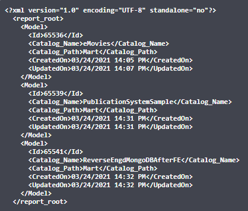

To be able to generate REST reports, ensure that you have the View permissions to the Mart and a bearer token.
Follow these steps:
curl -X POST "http://<server name>:18170/MartServer/api/report/authenticate" -H
"accept: */*" -H "Authorization: Bearer <bearer token>" -H "Content-Type:
application/json" -d "{\"password\":\"<password>\",\"username\":\"<username>\"}"
In the above command replace <server name>, <bearer token>, <username>, and <password> with your information. curl -X GET "http://<server name>:18170/MartServer/api/report/generateReport/ <predefined report name>?additionalProp1=string&additionalProp2=string &additionalProp3=string" -H "accept: */*" -H "Authorization: Bearer <bearer token>"
In the above command replace <server name>, <predefined report name>, and <bearer token> with your information.
An XML report based on the <predefined report name> parameter is generated. For example, if you replace this parameter with Models, the following report is generated, where the Mart had three models available in it:
